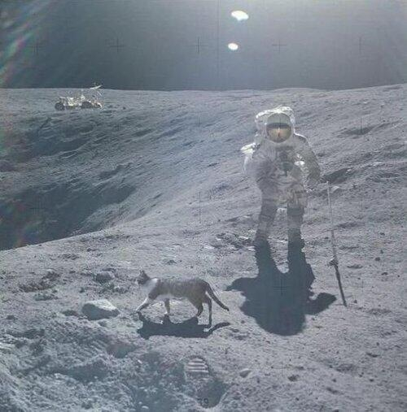

- About Me
Я, Кот с большой буквы и я прилетел с другой планеты, для того чтобы успешно осуществляют план по захвату Земли и подчинить людей своей воле.
Я уже побывал на Венере, Марсе и на Луне, и теперь успешно завоевываю Землю используя лучшие мои скилы, такие как жалостливый кошачий взгляд, дружелюбие, общительность и умение людей оберегать от стресса.
Для полетов в Космосе, мне пришлось привыкнуть к космической экипировке, в которой трудно дышать, неудобно двигаться и управлять космическим кораблем, но Я успешно с этим справился и постепенно освоил скафандр, навигационные приборы и пульт управления, что говорит о моем упорстве, трудолюбии и умении всегда находить выход из сложной ситуации. На первом этапе адаптация к жизни в невесомости для кота казалась не выполнимой, но мне помогли мои врожденные навыки навигации, логический склад ума и природная грация справиться с этой задачей, после чего космические миссии стали для меня привычным делом.
Исследование космоса - непростое дело, и в нем не избежать драм, подобных той, что показана в фильме "Гравитация", но несмотря на все трудности Я и мои сородичи смело бороздим космическое пространство, охраняя Вас от опасных вторжений недружелюбных инопланетных рас.
В ближайшем будущем я планирую стать президентом, но пока еще не решил с какой страны начать.
- Education
Cat University
290012 - 290018
Cat School
290010 - 290012
- Experience
Company 1
290018 - Jun 2020
Company 2
Jun 2020 - Present
- Skills
В совершенстве владею мяуканьем, мурлыканьем и шипением.
Мое мурлыканье — это звуки на частоте 20–140 Гц, исследования доказывают, что частоты в диапазоне 18–35 Гц улучшают подвижность суставов и мышц после травм, а также способны заживлять микротравмы и предотвращать мышечную атрофиюWhy do cats purr?. Это называется биомеханической стимуляционной терапией.
Умею снимать стресс в домашних условиях и благодоря моей харизме и комуникабельности избовляю людей от компплексов и Логофобии.
Повышаю уровень IQ у людей. Исследования подтверждают, что владельцы кошек в среднем имеют более высокий коэффициент интеллекта, чем хозяева собак. Кроме того, они более независимы, уравновешенны и обладают глубоким внутренним миром.
Я пришел с миром ✌!!!
- Hobby
Лучший отдых для меня - это сидеть с удочкой на берегу речки и ловить рыбу.
Я обажаю ночные прогулки по луне! 